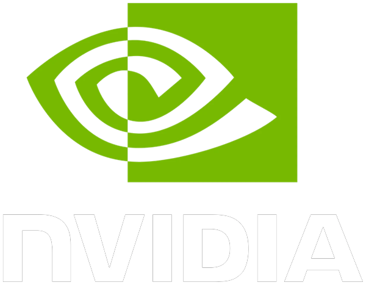
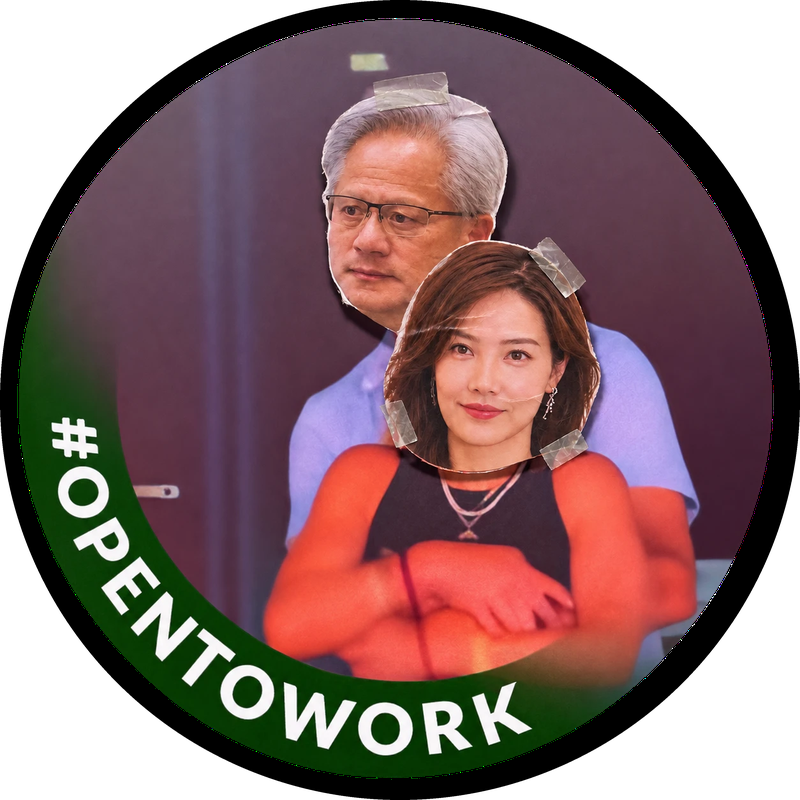
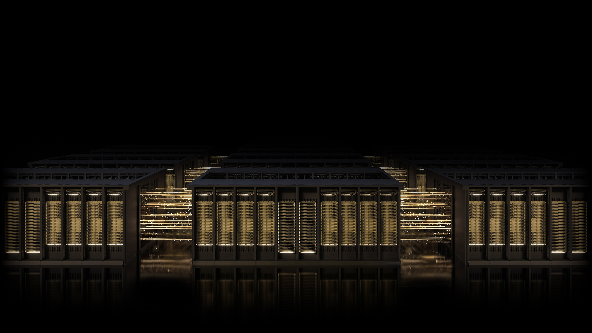
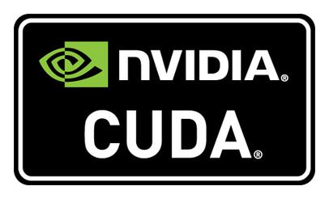
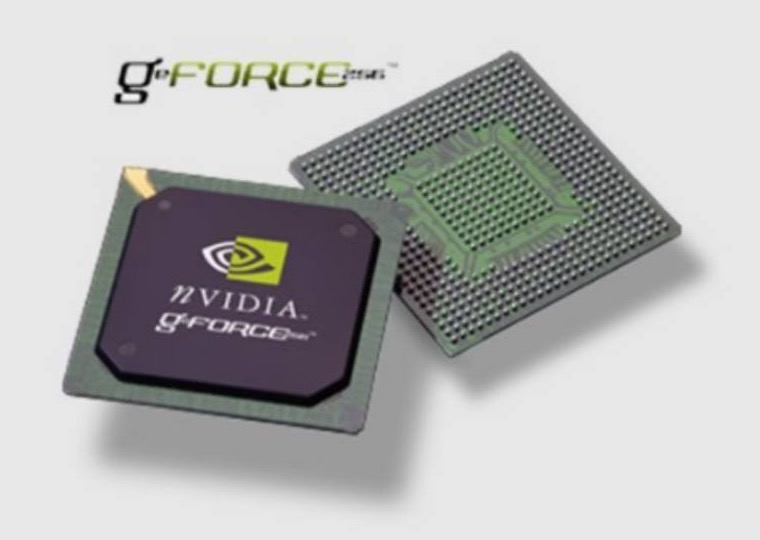
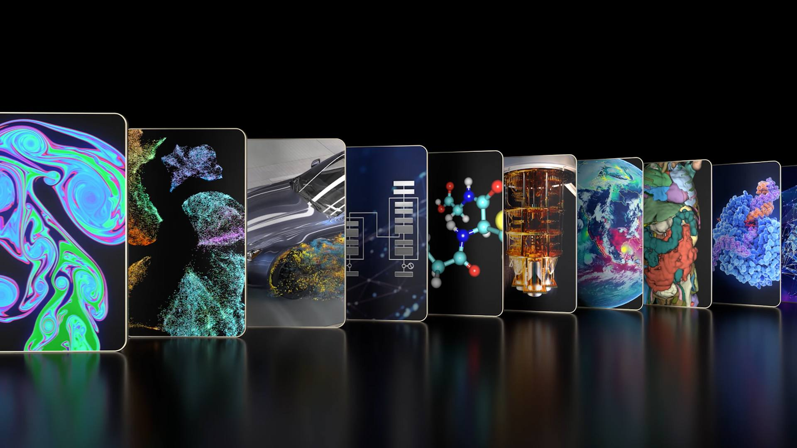
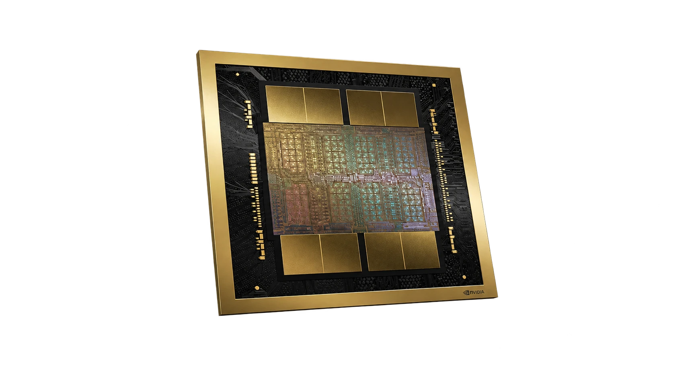
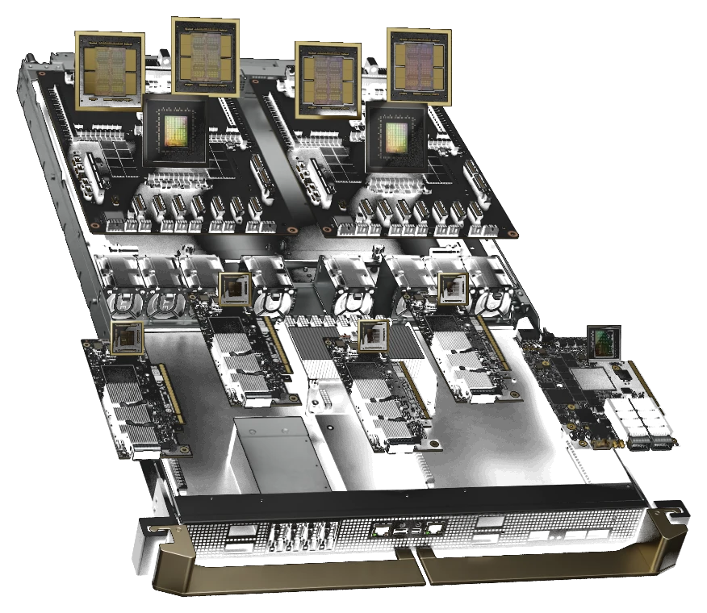

On one day in January 2025, NVIDIA lost $600 billion in market value.


NVIDIA’s Journey to $3 Trillion



NVIDIA sells one package that is hard to leave
- 01Rewrite software
- 02Retrain engineers
- 03Lose 300+ libraries
NVIDIA's biggest customers are now building their own chips
Customer shares are outside estimates. GIVEN $24.4B = 40% × $60.9B COMPUTED

How can NVIDIA keep its
pricing power and
keep growing?
Customers are locked into CUDA. Now the four biggest have the reason and the means to leave.
- Q1How much rides on AI data centers?
- Q2Why can NVIDIA charge so much?
- Q3Who can break the lock-in?
- Q4What is it worth to keep them?
- Q5Where can NVIDIA create new demand?
78% of NVIDIA's revenue now comes from one business, and it is NVIDIA's only proven growth engine
About 85¢ of each extra sales dollar became profit.
Data center revenue grew faster than estimated GPU shipments

Not a pure price. It also reflects product mix and non-GPU sales such as networking.
Buyers call the gap the “NVIDIA tax”. It is the reason they want to leave.
Buyers pay for the finished AI job, not for raw chip speed
raw calculations (TFLOPS) per dollar. The H100 costs about $40,000, four times the A100. GIVEN COMPUTED
more training per dollar: 9× faster for 4× the price. COMPUTED
Customers waited up to 18 months for NVIDIA chips rather than switch. GIVEN
NVIDIA's biggest buyers are also its biggest substitutes
Startups, held back by CUDA
TSMC makes the leading chips
4 buyers ≈ 40% of sales
Their own chips, plus PyTorch
Ratings are our judgment from case facts. GIVEN
The big buyers will move work to their own chips wherever it is cheaper
Cut costs and secure supply
GIVENUnder-spending on AI is riskier than over-spending
GIVENBuild their own chips, rent them out in their clouds
GIVEN65% of cloud · TPU 70–80% cheaper per chip
COMPUTEDAmazon already has chips for both jobs: Inferentia to run AI models, Trainium to train them.
GIVENA 10% discount pays for itself if it keeps 1 in 7 dollars from leaving
The discount pays off if holding the price would lose more than this share of top-4 volume. Discount ÷ 72.7%.
At these inputs, the targeted discount costs less than the business it protects.
Volume lost to a customer’s own chip rarely comes back. A discount can be adjusted next year.
We tested the case’s five options, plus one of our own
Strengthen CUDA and developer support
Gives developers a reason to keep choosing NVIDIA
Low-cost custom chips for large buyers
Could keep selected chip orders
Their chips in NVIDIA systems, plus targeted volume pricing
Could keep networking and systems sales
Broaden the customer base
Tests whether AI Foundry can win first-time enterprise buyers
Exclusive contracts
Keeps purchases only for the contract termAntitrust risk higher: regulators already watch NVIDIASell design know-how
Earns fees from chip buildersHelps rivals copy NVIDIA and build competing chipsInvest in CUDA now, and test the other two moves before scaling them
Strengthen CUDA
Better libraries, models and tools, especially for developers who already use PyTorch.
Keep selling systems when buyers build their own chips
Try it with one large buyer. Discounts only with a purchase commitment.
Win first-time enterprise buyers
AI Foundry and a partner, starting with a mid-sized insurer.
Every move comes from a finding in our analysis
CUDA is costly to leave, so buyers are less sensitive to price
Strengthen CUDA
Protects NVIDIA’s pricing power
Even a partial shift matters
Their chips can still run on NVIDIA networking and racks
Keep selling systems when buyers build their own chips
Scale only if the profit kept beats the integration cost and any discount
NVIDIA needs another source of growth
Many companies have put off custom AI
Win first-time enterprise buyers
Scale only if buyers pay and it turns a profit
Exclusive contracts
Regulators already watch NVIDIA closelySelling design know-how
Would help rivals copy NVIDIAWhat could go wrong, and how we would know early
Open software makes CUDA optional
Their own chips get good enough sooner than expected
The pilot does not convert, or costs too much to deliver
Strong revenue growth gives NVIDIA room to act while the core business is still performing well.
If you were Microsoft, would you still build your own chip if it could plug into NVIDIA’s systems?
NVLink Fusion
Announced May 18, 2025 INTERNET · AFTER THE CASE
It shows NVIDIA pursuing a similar approach.
It does not yet prove the move works.
Make staying the best option, and the biggest buyers stay.
Thank you
LT 1
- Carlos Miguel Perez
- Daniel Pollentes
- Fritzie Dianne Del Pilar
- Julius Vincent Angelo Español
- Marie Nicole Kimberly Jao
LT 2
- Allen Robert Adecer
- Elgene Mari Jose
- Joshua Therell Cuesta
- Lean Jerios
- Louie Patrick Yu
LT 9
- Don Kristoffer Domingo
- James Quin Maranan
- Jon Bryan Tiosin
- Jose Miguel Gamba
Our answers to all 15 case polling questions
| Q | Topic | Answer | Slide |
|---|---|---|---|
| 1 | AI chips for data centers | C · market-creating | 2 |
| 2 | CUDA ecosystem | C · value innovation | 3 |
| 3 | Why a blue ocean move | C · created a new market | 2 |
| 4 | Why customers buy | A, C, D | 8 |
| 5 | Profit model | B · premium prices | 7 |
| 6 | Why developers join | A, D | 3 |
| 7 | Uncontested growth | D · all of the above | 3 |
| 8 | Gaming GPUs | B · migrator | 6 |
| Q | Topic | Answer | Slide |
|---|---|---|---|
| 9 | AI data center | A · value innovation | 6 |
| 10 | AI Foundry | D · not yet proven | 6 |
| 11 | Approach, last 5 years | C · defend and create | 6 |
| 12 | Shift from gaming | B · new AI demand | 6 |
| 13 | Biggest challenge | D · in-house chips | 9 |
| 14 | Response | E, C, B | 12 |
| 15 | Future success | D, E, F | 13 |
| Q12 note: gaming fell 27% in FY2023 and recovered in FY2024, so decline was not the cause. COMPUTED | |||
Frameworks held in reserve
PESTLE
Regulation and export controls are the main external constraint. Covered on slides 13–15.
SWOT / TOWS
Strength: the CUDA package. Threat: buyers' own chips. Same conclusion as slides 9–10.
Motive / means matrix
Motive: 73% margins. Means: scale, own software, own clouds. Only the top 4 have both.
Session 1 seven tests
Applied to the recommendation by Group 3. Details held for Q&A.
CEO actions with measures
One owner and one measure per move. Details held for Q&A.
Why only two on the main slides
Five Forces and Four Corners answer our question directly. The rest repeat the same finding.